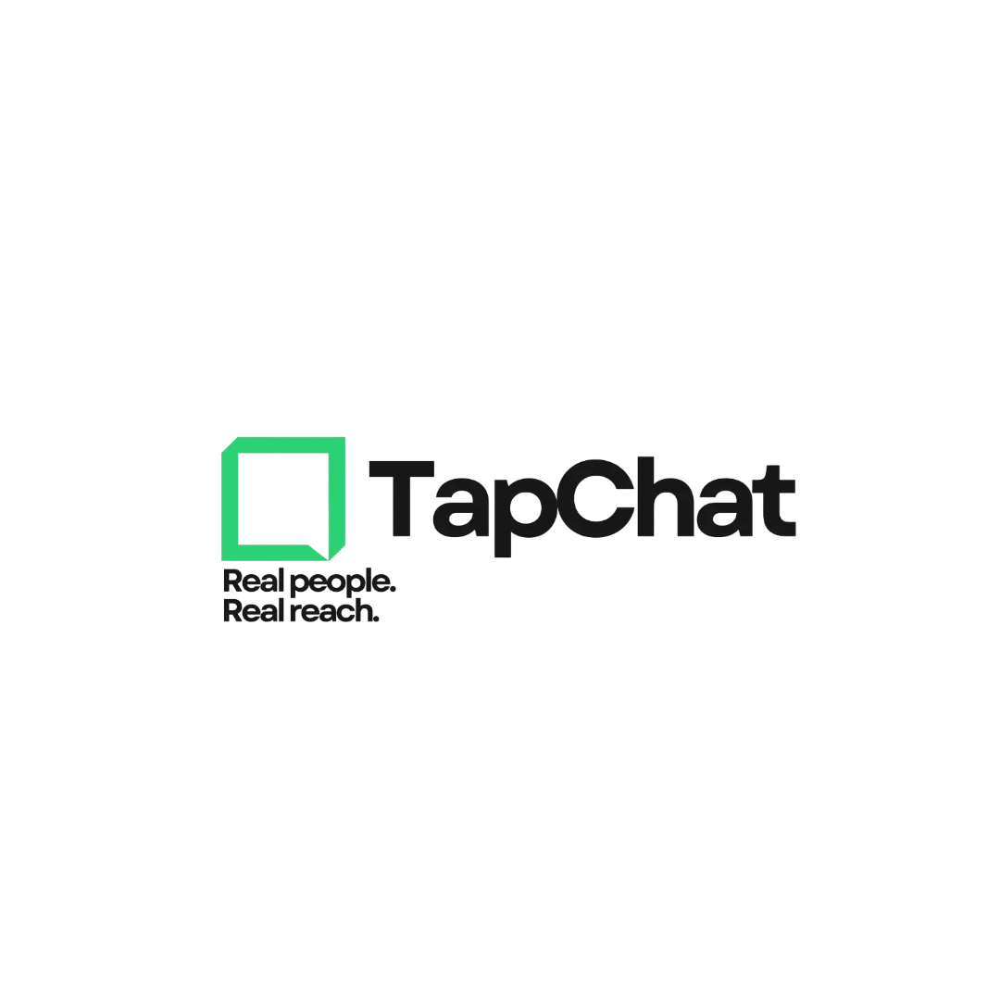

I create user-friendly, visually polished websites using modern tools like HTML, CSS, JavaScript, and frameworks. I focus on clean code, smart design, and helping clients stand out online.
Fully built custom web portal mapping localized styling arrays to Laravel systems. Features intuitive scheduling pipelines, responsive content wrappers, and targeted local optimization parameters.
Engineered dynamically to handle complete backend CRUD operations. Employs clean MVC design frameworks, secure authentication gates, and relational data query pipelines.

TapChat is a live Squarespace website built by transforming user inputs into a functional responsive system using structural framework parameters.
Fully engineered and published a corporate web platform for Ninety Seven Accounting using WordPress. Handled complete DNS management and optimized structural layouts.